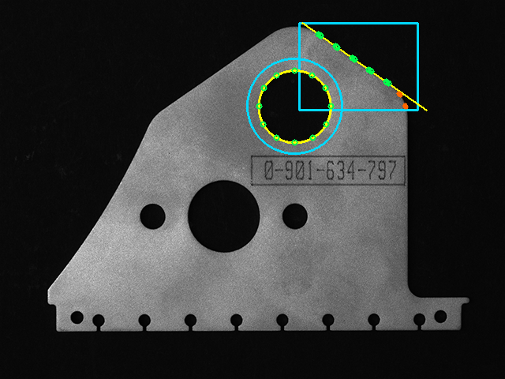

EdgesGauging.jl
Sub-pixel edge detection and robust geometric fitting (lines, circles) for machine-vision gauging tasks, written in pure Julia.
What it does
- 1-D edge detection in intensity profiles, with Gaussian smoothing and parabolic sub-pixel interpolation of gradient extrema. NaN-tolerant — works on profiles padded with NaN at the ends.
- 2-D edge detection across rectangular ROIs, multi-strip scans, and radial / ring scans from a reference point.
- Profile extraction along arbitrary paths — sample an image along a line segment or a circular arc with selectable interpolation (
INTERP_NEAREST,INTERP_BILINEAR,INTERP_BICUBIC), configurable strip width, and explicitNaNfor out-of-bounds samples. - Robust geometric fitting via a generic RANSAC engine (
ransac,ransac2) with constraint support — seeLineConstraintsandCircleConstraintsfor angle, radius, arc completeness, and inlier-count limits.
Install
] add https://github.com/schrpe/EdgesGauging.jl(Once registered in the General registry: ] add EdgesGauging.)
Example: line and circle on a real part
Using the test image test/blob.tif — a 480×640 grayscale photograph of a metal plate — we demonstrate gauge_line on the slanted right edge and gauge_circle on the upper round hole.
using FileIO, Images, Random, EdgesGauging
Random.seed!(0) # RANSAC samples randomly — fix the seed
# so these numbers reproduce.
img = Float64.(Gray.(load("test/blob.tif")))
# Line gauge — slanted right edge of the part
line_fit = gauge_line(
img, (30, 380, 140, 530), LEFT_TO_RIGHT,
15.0, # strip spacing (px)
3, # strip thickness (px)
2.0, # sigma - Gaussian smoothing
0.05; # threshold - min |gradient|
polarity = POLARITY_NEGATIVE, # bright metal → dark background
selector = SELECT_BEST,
)
# Circle gauge — round hole near the top of the part
cc = CircleConstraints{Float64}(min_radius = 20.0, max_radius = 70.0)
circle_fit = gauge_circle(
img, (135.0, 374.0), # rough centre estimate (row, col)
0.0, 2π, # full 360°
deg2rad(30.0), # angular step between rays
60, # ray length (must exceed true radius)
2.0, 0.05; # sigma, threshold
polarity = POLARITY_POSITIVE, # ray dark hole → bright metal
selector = SELECT_BEST,
constraints = cc,
refine = true, # geometric LM refinement
)Output (run via julia --project=docs docs/generate_readme_example.jl):
─ Line fit ────────────────────────────────────────────────
A,B,C = 0.575, -0.8181, -196.45
angle = 35.1° (from +x axis)
inliers = 15 / 21
─ Circle fit ──────────────────────────────────────────────
centre (col,row) = (374.163, 135.715)
radius (px) = 45.654
inliers = 13 / 13The fitted line is reported in normalised implicit form A·x + B·y + C = 0 with A² + B² = 1 and (x, y) = (col, row). The normalisation makes |A·x + B·y + C| the perpendicular distance (in pixels) from any point (x, y) to the line — that is exactly the residual RANSAC uses for inlier classification. (A, B) is the unit normal of the line; (-B, A) is its tangent direction, so the orientation reported as angle is atan(A, -B) wrapped into [-90°, 90°].
The line ROI is positioned so the lower strips graze the slant→vertical transition of the part's right edge — those strips deviate from the straight line and become the 6 RANSAC outliers shown in the overlay.
The annotated overlay below shows every layer of the pipeline:
| Layer | Colour |
|---|---|
| Measurement windows | cyan |
| RANSAC inlier edge points | green hollow rings |
| RANSAC outlier edge points | filled orange disc |
| Fitted line / fitted circle | yellow |

Profile extraction along arbitrary paths
extract_line_profile and extract_arc_profile sample image intensity along a straight segment or a circular arc, returning a 1-D Vector{Float64} ready to feed into gauge_edges_in_profile:
# Slim profile across a feature, then sub-pixel edge detection
p = extract_line_profile(img, (row0, col0), (row1, col1);
width=1, interp=INTERP_BICUBIC)
r = gauge_edges_in_profile(p, 2.0, 10.0, POLARITY_POSITIVE, SELECT_BEST)
# Wider strip averages 5 parallel samples — useful when the feature is
# slightly tilted or noisy
p_strip = extract_line_profile(img, p0_rc, p1_rc; width=5)
# Arc-length-uniform sampling along an arc (auto-density)
p_arc = extract_arc_profile(img, (row_c, col_c), 40.0, 0.0, π/2)Out-of-bounds samples are emitted as NaN. gauge_edges_in_profile is NaN-tolerant: NaN-padded profiles flow straight through and the edge is still found in the valid interior.
Conventions
- Image arrays are
(row, col)— matching Julia's column-major indexing. center_rcand segment-endpoint arguments are therefore(row, col)tuples.- Integer index = pixel centre.
image[i, j]is the value at(row, col) = (i, j); the pixel itself spatially covers(i-0.5, j-0.5)…(i+0.5, j+0.5). Sample positions outside(0.5, 0.5)…(nrows+0.5, ncols+0.5)yieldNaN. - Detected edges in
ImageEdgeare exposed as Cartesian(x = col, y = row)for consumers that prefer image-space coordinates.
Error handling
gauge_line and gauge_circle throw GaugingError with a reason::Symbol field when a pipeline fails:
:too_few_points— edge detection produced fewer points than the fitter requires.:ransac_failed— RANSAC could not find a model satisfying the supplied constraints (radius range, angle range, arc completeness, …).
Catch on e.reason to branch on the failure mode:
try
fit = gauge_circle(img, (row, col), 0, 2π, deg2rad(3), 80, 2.0, 0.1)
catch e
e isa GaugingError && e.reason === :too_few_points || rethrow()
# fall back to a coarser threshold / larger ROI / …
endSee the API reference for the complete public interface.